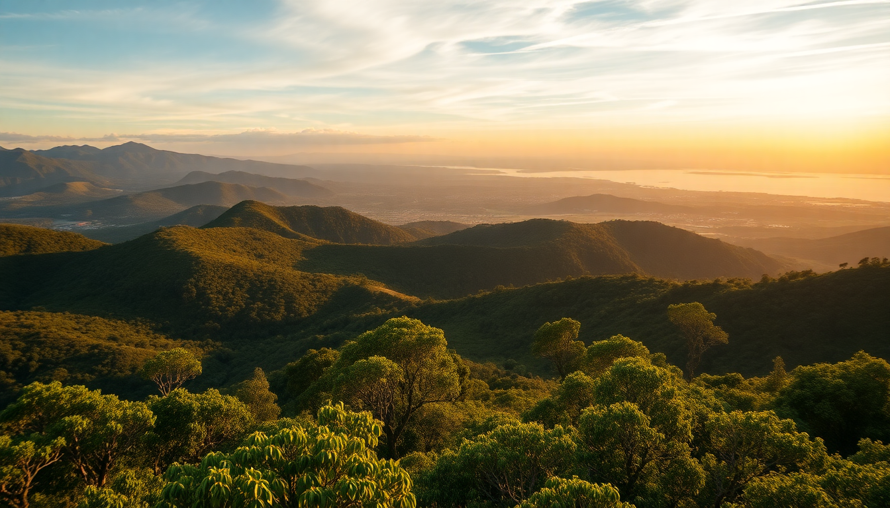

Best Day Trips from Cali: Coffee, Nature & Culture

I spent a week based in Cali, and while the salsa scene keeps you busy at night, the real payoff is what you can do during the day within a two-hour drive. These four trips—Popayán, San Cipriano, and Calima Lake—are the ones I’d do again, and the ones I’d skip the fluff for.
Why base yourself in Cali for day trips?
Cali sits in a valley with mountains to the west and flatlands to the east, making it a practical hub. The bus terminal (Terminal de Transportes de Cali) is chaotic but functional—think of it as a controlled mess. I found that leaving by 7 a.m. avoids the worst traffic and the heat. Most day trips run 45 minutes to two hours by bus or car, and you’re back by dinner for a bandeja paisa or a cheap beer in the San Antonio neighborhood. The key is to pick one direction per day; trying to do Popayán and San Cipriano in the same trip is a rookie mistake.
Is a day trip to Popayán worth the drive?
Yes, but only if you’re into colonial architecture and quiet streets. Popayán is a two-hour bus ride from Cali’s terminal—buses leave every 30 minutes from the Transportes Sotracauca counter. I grabbed a seat on a 7 a.m. bus for 25,000 COP (about $6). The city is known for its whitewashed churches and cobblestone plazas, and it feels like a cleaner, calmer version of Cartagena without the hawkers.
- Start at Plaza de Caldas, the main square, then walk to Iglesia de San Francisco—the gold-leaf altar inside is worth the 5,000 COP entry.
- Lunch at Restaurante El Solar on Calle 5: try the carantanta (fried corn dough) with hogao. It’s not touristy, and the portions are huge.
- Skip the Museo de Historia Natural unless you’re a fossil nerd; it’s dusty and underwhelming.
- Head back by 3 p.m. to catch the last comfortable bus; the 5 p.m. bus is packed with commuters.
I’d call Popayán a solid half-day trip. If you’re a coffee drinker, the farms around the city are better than the ones near Salento—less crowded, more genuine. I stopped at Finca El Ocaso on the way back, which offers a 90-minute tour for 30,000 COP. They let you roast your own beans.
What’s the deal with San Cipriano’s river train?
San Cipriano is the most unique day trip I’ve done in Colombia. It’s a small jungle village about 90 minutes west of Cali, reachable only via a brujita—a wooden cart on train tracks pulled by a motorcycle. You catch a bus from Cali’s terminal to the town of Córdoba (10,000 COP, one hour), then hop on the brujita for 5,000 COP. The ride is 20 minutes of dense jungle, river crossings, and dust in your teeth. I loved it.
- The main activity is river tubing on the Río San Cipriano. Rent a tube for 10,000 COP from any of the dozen guys at the riverbank; they’ll drop you upstream and you float back.
- Lunch at Restaurante Donde Chucho: grilled tilapia with patacones and a fresh limeade. Costs about 15,000 COP.
- Bring cash. There’s no ATM, and card readers are a myth here.
- The village is small—you can walk it in 15 minutes. Don’t plan for more than four hours unless you want to camp.
The water is cool and clean, and the vibe is pure jungle chill. I’d skip the “natural pools” they promote—they’re just shallow spots in the river. The real draw is the ride and the tubing.
Can you windsurf at Calima Lake in a day?
Yes, and you should. Lago Calima is a massive reservoir about 90 minutes northwest of Cali. It’s the windsurfing and kitesurfing capital of Colombia, thanks to consistent afternoon winds from November to March. I drove there with a friend, but buses from Cali’s terminal to El Lago neighborhood run every hour (15,000 COP, 90 minutes).
- Rent gear from Club Náutico Calima—a full windsurf setup costs about 80,000 COP for two hours. They also offer beginner lessons for 120,000 COP.
- If you’re not into water sports, hike the Cerro de la Virgen trail—it’s a 40-minute uphill walk with views of the entire lake.
- Lunch at Restaurante La Playa: order the trucha (trout) with coconut rice and a patacón. It’s honest food, not overpriced resort fare.
- Stay at Hotel Calima Lago if you want to sleep over—rooms start at 150,000 COP and have lake views.
The wind picks up around 1 p.m. and dies by 5 p.m., so plan your day around that. I made the mistake of arriving at 11 a.m. and sat around for two hours. The lake is pretty, but it’s not a swimming destination—the water is cold and brown. Come for the wind, not the beach.
What should you eat and drink in Cali before or after trips?
Cali’s food scene is underrated. You’ll need fuel before a day trip or a reward after. I ate at Restaurante El Viejo Muro in San Antonio twice—their bandeja paisa (22,000 COP) is the kind of plate that justifies a nap. For street food, Empanadas de Pipián from a cart on Avenida 6 are cheap (2,000 COP each) and addictive. The pipián filling—peanuts, potatoes, and achiote—is a local specialty.
- Cholado is a shaved ice dessert with fruit and condensed milk sold at stalls near the Plaza de Caicedo. It’s perfect after a hot day. Cost: 5,000 COP.
- For drinks, try Lulada (a sour fruit drink) at Heladería Crepes & Waffles in the Chipichape mall—it’s a chain, but the lulada is legit.
- Avoid the tourist-trap restaurants on Calle 5 in San Antonio; they charge double for the same empanadas you can get on the street.
FAQ
Is it safe to take public buses from Cali for these day trips? Generally, yes. The bus terminal is well-policed, and the routes to Popayán, Córdoba (for San Cipriano), and Calima Lake are safe during daylight hours. I wouldn’t take a bus after 6 p.m. on any of these routes, especially the San Cipriano road, which gets dark and isolated. Keep your phone and wallet in a zipped pocket, and don’t flash valuables.
Do I need to book tours in advance for San Cipriano or Calima Lake? No. For San Cipriano, you just show up and negotiate with the brujita drivers and tube renters on the spot. For Calima Lake, gear rental is first-come, first-served, but weekends can get busy. If you want a windsurfing lesson, call Club Náutico Calima a day ahead to reserve an instructor. Popayán’s coffee farm tours are easy to book same-day.
What’s the best time of year for these day trips? December to March is the dry season, which makes all three trips better. The river in San Cipriano is clearer, the wind at Calima Lake is stronger, and Popayán’s streets aren’t slick with rain. June to August is also good but slightly wetter. Avoid October and November—heavy rain can wash out the San Cipriano road and make the brujita ride miserable.
Conclusion
- Popayán is a half-day trip for architecture and coffee; skip the museum, eat at El Solar, and visit Finca El Ocaso for the best farm tour.
- San Cipriano is a full morning for river tubing and the brujita ride; bring cash and a dry bag, and eat tilapia at Donde Chucho.
- Calima Lake is a full day for windsurfing or hiking; arrive after noon for the wind, and book gear at Club Náutico Calima.
- Cali’s food—empanadas de pipián, bandeja paisa at El Viejo Muro, and a cholado—holds its own against any post-trip hunger.
- Safety is manageable if you stick to daytime buses and keep your wits about you.